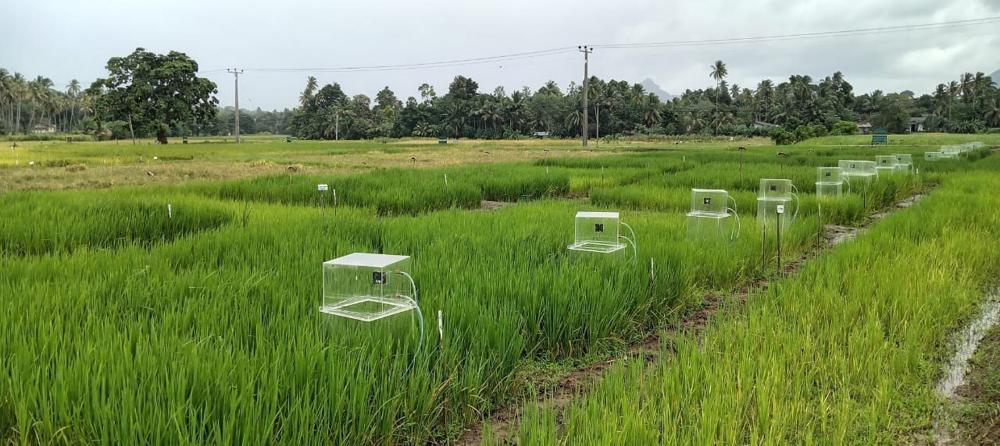
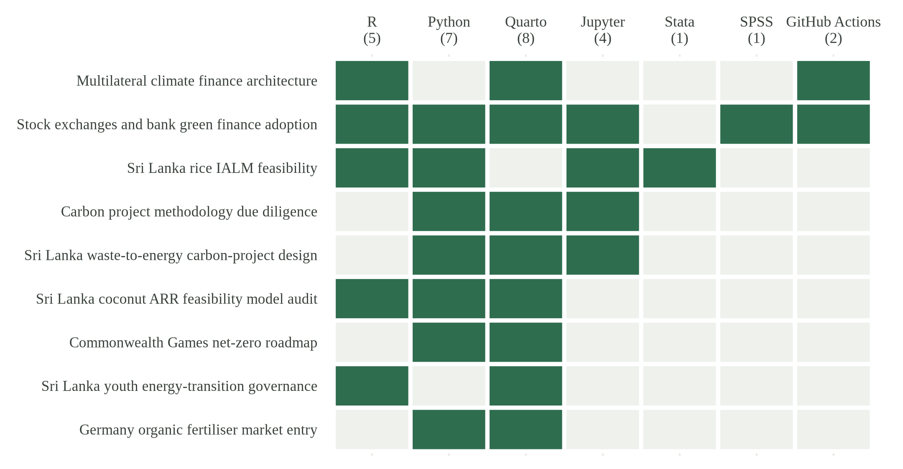

Reproducible research by Ravindu Nawanjana in R, Quarto, Python, Stata and SPSS, covering degree research and applied computational projects on climate finance, carbon markets and agriculture.
R and Quarto are my main tools for statistics and reporting. I use Python and Jupyter for model engines and as an independent audit layer, and I keep SPSS and Stata files where they are the original evidence.
Degree research
These two repositories reproduce the statistics in my MSc and BSc papers from the survey data. The MSc page on this site reruns the main regression in R and Python each time the site is built, and the results table shows the comparison with the published SPSS values.
Reproduces the MSc survey analysis from the anonymised responses, covering reliability, correlations, OLS with standardised slopes, diagnostics and leave-one-respondent-out sensitivity, with automated checks against the SPSS-reported values. Includes a written specification of the Institutional Reinforcement Cycle.
Built with R, Quarto and GitHub Actions.
R-first analysis of the Figshare survey package, covering scoring, reliability, correlations, OLS with VIF and influence diagnostics, bootstrap, KMO/Bartlett and exploratory factor analysis, chi-square sensitivity and direct reconciliation with the SPSS file. Python/Jupyter runs as an independent audit of the same data.
Built with R, Quarto, Python, Jupyter, SPSS and GitHub Actions.
Reconstructs a 2025 paddy-field feasibility study of alternate wetting and drying, reduced tillage and nutrient management (32 plot records, 2 x 2 x 4 x 2 design), and maps the evidence needed for methane and carbon-credit quantification under VM0042 and VM0051.
Built with R, Python, Stata and Jupyter.

Rice plots with greenhouse-gas monitoring chambers installed in the field, Sri Lanka, August 2025.
Evidence review for carbon methodologies with explicit assumptions, deterministic sensitivity analysis and seeded Monte Carlo simulation of scenario risk.
Built with Python, Jupyter and Quarto.
Municipal feedstock mass balance, technology screening and avoided-emissions sensitivity for a waste-to-energy project designed around ACM0022.
Built with Python, Jupyter and Quarto.
Cohort accounting, mortality, carbon stock change and cash-flow sensitivity for a hybrid coconut afforestation project screened against VM0047, with robustness checks in R.
Built with Python, R and Quarto.
Independent GHG inventory framework for Glasgow 2026, covering activity boundaries, non-overlapping abatement measures and uncertainty.
Built with Python and Quarto.
Programme monitoring in R for the Commonwealth Sustainable Energy Transition Youth chapter in Sri Lanka, linking each activity to its evidence and completion record.
Built with R and Quarto.
EU fertiliser regulation route screening (FPR product function and component categories), unit economics and landed-cost sensitivity.
Built with Python and Quarto.
Tools across the repositories

Figure 1. Which tools each public repository uses. Built in R from the same data file as the list above.
Methods toolkit
Applied quantitative methods. Linear regression and diagnostics, panel data and fixed effects, difference-in-differences, instrumental variables, regression discontinuity, correlation and reliability analysis, exploratory factor analysis, bootstrapping, survey design, DCF modelling, sensitivity analysis and evidence reconciliation.
Carbon markets and ESG. Verra AFOLU methodologies VM0042, VM0047 and VM0051, and VM0038 for electric vehicle charging; Project Design Document preparation; additionality assessment; GRI, SASB, TCFD, CDP and SBTi frameworks.
Software. R, Python, Quarto, Jupyter, Stata, IBM SPSS Statistics, Git and GitHub Actions. I am also working through IBM Quantum Learning coursework in Qiskit.
This website
The site is a Quarto project. R reads the content files (news, papers, statements, projects) and writes the pages, draws every chart, and reruns the MSc regression, with a Python check through reticulate. The model explorer on the MSc page runs in the browser in Observable JavaScript. A GitHub Actions workflow renders and publishes the site. The source is in the site repository.